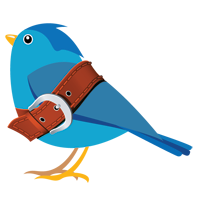
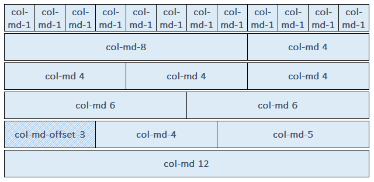
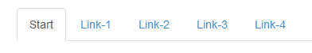

Web-basierte Anwendungen 1
Responsive Webdesign Frameworks
21. November 2013
Studiengang Medieninformatik an der Fachhochschule Köln
Campus Gummersbach
Eduard König
github@bigded
Marc Philipp Marcinkowski
github@mmarcin1
Stefania Ciola
github@chibistef
Inhalt
- Grundlagen
- Technik
- Frameworks
- Vor- und Nachteile
- Beispiel zur Umsetzung mit Bootstrap
Grundlagen
- Größe und Auflösung des Displays variieren
- Unterschiedlichen Anforderungen an die Endgeräte
- möglichst von allen Geräten (Computer, Tablet, Smartphone) erkannt zu werden
- übersichtlich und benutzerfreundlich wie möglich präsentieren
Ziel:

Technik
Media Queries, Eigenschaftsspezifische Stylesheets
- Gitter-System im Spalten aufgebaut
- Flexibles System
- Arbeitet mit HTML5, CSS3 und JavaScript
- Icons als Glyphicons (als Schritzeichen in Bootstrap)
Eigenschaften:
- Größe des Gerätes, Bildschirmauflösung
- Orientierung (Hoch- oder Querformat)
- Eingabemöglichkeiten (Tastatur, Touch, Sprache)
Mobile first
Text kommt...
Frameworks
Die Komponente:
- Responsive Grafiken
- Responsive Typography und Links
- Eingabefelder und Navigation
- Tabellen, Formulare und mehr
Einige Webdesign Frameworks:
- Bootstrap 3 - OpenSource
- Foundation 4
- YAML 4
- Gumby 2
- Kube
- GroundworkCSS
- BASE
Vorteile |
Nachteile |
|---|---|
| Anpassung der Webseite | Mehr Arbeit als normale Webseite |
| Geräteunabhängiges arbeiten, sehr flexibel |
Inhalt und Code wird oft miteinader vermischt |
| Regelmäßige Updates verfügbar | Komplexe Gestaltungen schwerer umsetzbar |
| Wiederverwertbar für zukünftige Webseiten | |
| Schnellere Mock-Up Prozesse |
Beispiel zur Umsetzung mit Bootstrap
Horizontale Stappelung
Mit Hilfe des Tags in den Klassen .col-md-* kann man die Grundraster anpassen.

Horizontale Stappelung
<div class="row">
<div class="col-md-1">.col-md-1</div>
<div class="col-md-1">.col-md-1</div>
<div class="col-md-1">.col-md-1</div>
<div class="col-md-1">.col-md-1</div>
<div class="col-md-1">.col-md-1</div>
<div class="col-md-1">.col-md-1</div>
<div class="col-md-1">.col-md-1</div>
<div class="col-md-1">.col-md-1</div>
<div class="col-md-1">.col-md-1</div>
<div class="col-md-1">.col-md-1</div>
<div class="col-md-1">.col-md-1</div>
<div class="col-md-1">.col-md-1</div>
</div>
<div class="row">
<div class="col-md-8">.col-md-8</div>
<div class="col-md-4">.col-md-4</div>
</div>
<div class="row">
<div class="col-md-4">.col-md-4</div>
<div class="col-md-4">.col-md-4</div>
<div class="col-md-4">.col-md-4</div>
</div>
<div class="row">
<div class="col-md-6">.col-md-6</div>
<div class="col-md-6">.col-md-6</div>
</div>
Typography
Alle HTML-Überschriften, von <h1> bis <h6> stehen zur Verfügung.
<h1>...</h1>
<h2>...</h2>
<h3>...</h3>
<h4>...</h4>
<h5>...</h5>
<h6>...</h6>
Formulare
Auch die Eingabefelder sind durch die Klasse form-control responsiv.

<div class="container">
<div class="four columns">Spalte 1</div>
<div class="four columns">Spalte 2</div>
<div class="four columns">Spalte 3</div>
<div class="four columns">Spalte 4</div>
</div>
Schaltflächen
Verwende eine der Klassen btn btn-* um schnell einige Schaltflächen zu definieren.
<button type="button" class="btn btn-default">Default</button>
<button type="button" class="btn btn-primary">Primary</button>
<button type="button" class="btn btn-success">Success</button>
<button type="button" class="btn btn-info">Info</button>
<button type="button" class="btn btn-warning">Warning</button>
<button type="button" class="btn btn-danger">Danger</button>
<button type="button" class="btn btn-link">Link</button>
Bilder
Die Bilder werden mit dem <img> src="..."-Tag eingebunden.
Verwende die Klasse img-* um die Grafiken entsprechen anzupassen.


Responsive Bilder
Responsive Grafiken werdne mit der Klasse img-responsive eingeleitet.

Menüleiste
Navbars are responsive meta components that serve as navigation headers for your
application or site. They begin collapsed (and are toggleable) in mobile views and become horizontal as the available viewport width increases.


Menüleiste
Glyphicons
In Bootstrap sind 180 Glyphicons sogenannte Schriftzeichen erhältlich.
Diese wurden kostenlos zur Verfügung gestellt von Jan Kovařík. Weitere Schriftzeichen unter der Verwendung von Bootstrap findet man hier.

Übungen
Downloadlink
DOWNLOAD - Rohmaterial für die Übungen.
Übung 1
Ziel: Responsives Gridsystem
Erweitern sie die index.html mit hilfe des Gridsystems um folgende Zeilen und füllen sie diese mit einem Blindtext:
1. Zeile : Spalte Länge: 3 Bezeichnung "Nebenspalte , Spalte Länge: 9 Bezeichnung: "Hauptspalte"
2. Zeile : 3 Spalten der Länge: 4 Bezeichnung: "Hauptspalte 1-3"
3. Zeile : Spalte Länge: 3 Offset: 4 Bezeichnung: "Nebenspalte", Spalte Länge: 5 Bezeichnung: "Hauptspalte"
4. Zeile : Spalte mit der Bezeichnung: "Hauptspalte", die 5 nach rechts versetzt ist und eine Länge von 4 besitzt
Übung 2
Text hier...
Übung 3
Text hier...